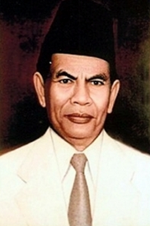
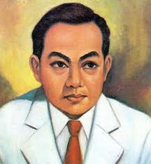

USULAN DASAR NEGARA

Mohammad Yamin
Prof. Mr. Mohammad Yamin, S.H. (24 Agustus 1903 – 17 Oktober 1962) adalah seorang sastrawan, sejarawan, budayawan, politikus, dan ahli hukum yang dihormati sebagai pahlawan nasional Indonesia.

Soepomo
Prof. Mr. Dr. Soepomo, lahir di Sukoharjo, Jawa Tengah pada 22 Januari 1903 dan Wafat Pada 12 September 1958 di Jakarta, adalah salah satu pahlawan nasional Indonesia.

Ir.Soekarno
Ir. Soekarno, yang juga dikenal sebagai Bung Karno, lahir di Surabaya pada 6 Juni 1901 dan Wafat pada 21 Juni 1970. Beliau adalah proklamator kemerdekaan Indonesia dan presiden pertama Republik Indonesia.